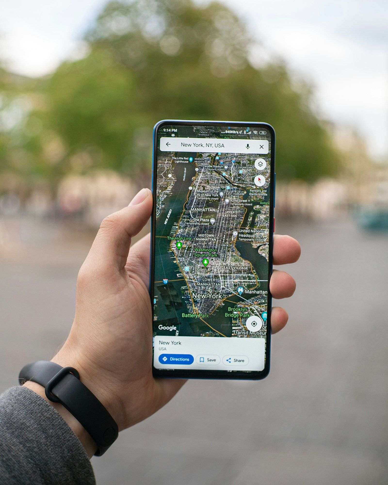

Search engine optimization
Show up when it matters: the moment someone searches.
Most local customers start with a search. We make sure your business is the one they find — on Google Maps, in the local pack, in organic results and increasingly in AI answers.

Overview
Local SEO that gets you on the map, in the pack and on page one for the searches that bring customers.
Most local customers start with a search. Local SEO is the work of making sure your business is the one they find — on Google Maps, in the local pack, in the organic results, and increasingly in the answers AI assistants give. It compounds: the work we do this month keeps paying next year.
Technical SEO: a foundation Google can crawl
Before content can rank, the site has to be healthy. We audit and fix the things that silently hold sites back.
- Full technical audit: crawl errors, indexing, redirects, duplicates
- Core Web Vitals and mobile speed brought into the green
- Clean URL structure, canonical tags, XML sitemap
- Schema markup for your business, services, reviews and FAQs
- Security (HTTPS, headers) and crawl budget hygiene
Local SEO: the map pack and 'near me'
The three businesses in Google's map pack get the majority of local clicks. Getting there is a system: profile, citations, reviews and relevance.
- Google Business Profile completed, categorized and posted to weekly
- Citations built and corrected across 40+ directories
- Review velocity and responses that signal activity
- Service-area and location pages for every city you serve
- Local link building with chambers, partners and press
Keyword strategy from how customers actually search
We don't chase vanity terms. We find the searches that bring a customer who's ready to call, book or buy, and build pages that answer them.
- Keyword research by intent: buy now vs. research vs. compare
- Competitor gap analysis for your market
- A page for every service and every area, mapped to a keyword
- Content briefs with the questions people actually ask
- Quarterly refresh as the market and Google change
Content that answers the question
Google rewards pages that fully answer what someone searched for. We write service pages, guides and FAQs that do — in your voice.
- Service pages rewritten around search intent
- Local guides and comparison articles that earn links
- FAQ sections marked up with schema
- Images, headings and internal links optimized
- Content refreshed, not just added
Reporting on leads, not just rankings
Rankings are a means. Calls, form fills, direction requests and bookings are the point — and that's what the monthly report shows.
- Call tracking and form tracking connected to the report
- Rankings for your core keywords across your service area
- Google Business Profile insights: calls, directions, website taps
- Organic traffic and top landing pages
- A one-page summary and a 'what's next' section
Deliverables
What you get every month.
- Technical health check and fixes
- 4 Google Business Profile posts and photo updates
- 2 new or refreshed pages of local content
- Citation audit and corrections
- Ranking, traffic and lead report
Timeline
What to expect, and when.
- Month 1Audit, fixes, Google Business Profile overhaul, keyword map. Profile views and calls usually move first.
- Months 2–3Content and citations land. Map-pack positions improve for your main services.
- Months 4–6Organic rankings for competitive terms. Leads from search measurable and growing.
- OngoingDefend, expand to new services and areas, and adapt to Google's changes.
Why us
Why Landmark Digital.
Your reliable client team: collaborative, plain-spoken, nimble and local-first.
Collaborative
We work inside your accounts with you, not around you. You see every post, page and reply before or as it goes out.
Plain-spoken
No jargon, no vanity metrics. Reports talk about calls, bookings, reviews and revenue.
Nimble
A Phoenix team that answers the phone. Changes happen in days, not quarters.
Local-first
Hotels, restaurants, practices, dealerships and trades are the whole business — where being found locally decides the month.
Ask our experts
FAQs on seo.
How long until SEO works?
Google Business Profile improvements often show within weeks. Competitive organic rankings usually take 3–6 months of consistent work.
Do you guarantee page one?
No one honest does. We guarantee the work, transparent reporting and a plan built on your real competition.
What is AI search visibility?
People now ask ChatGPT, Gemini and Perplexity for recommendations. We structure your content and data so those engines understand and cite your business. It's included in Grow.
Do I need a new website for SEO?
Not always. If the site is sound we work with it. If it's slow or hard to edit, we'll tell you and quote a rebuild.
Can you do SEO for multiple locations?
Yes. Scale covers up to three locations with their own profiles, pages and reports; more at $450 per location.
Do you use AI to write content?
We use AI tools for research and drafts, and people for the final word. Everything is fact-checked, in your voice and approved by you.
Works well with
Website design
Fast, beautiful WordPress sites built to turn visitors into calls, bookings and orders.
Learn moreSocial media management
Planned, designed and posted for you — with replies, stories and the kind of consistency that builds a following.
Learn moreReputation management
More five-star reviews, fast responses to every one, and listings that say the same thing everywhere.
Learn moreWant seo handled?
Start with a free audit — we'll tell you where you stand and what we'd do first.